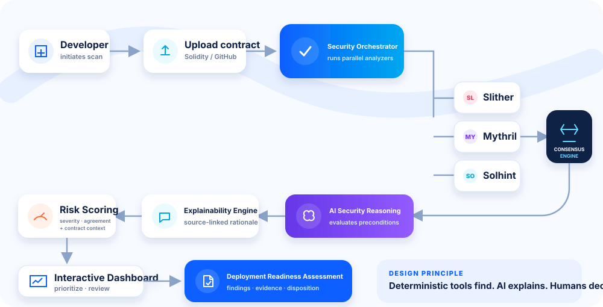
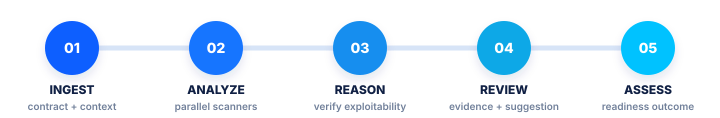

Multi-tool security consensus
Records agreement across Slither, Mythril, and Solhint.
An explainable AI copilot that correlates analyzer findings with code context, supporting evidence, and remediation guidance.
CyberShield AI is an Explainable AI platform for secure Solidity smart contract development and blockchain security.
msg.sender.call{value: amount}("");Potential exploit path State updates occur after the external call, which may permit recursive withdrawals.
CyberShield AI links deterministic analyzer outputs with contextual AI reasoning, source references, and suggested remediation for developer review.
Records agreement across Slither, Mythril, and Solhint.
Links risk interpretation to code and analyzer evidence.
Developers review findings, suggestions, and risk disposition.
Organizes analysis around review and readiness assessment.
Raw findingsdifferent formats · duplicate alerts
Correlated evidenceagreement · preconditions · context
Reviewed actionexplain · suggest · review · assess
The proposed system normalizes analyzer findings, records cross-tool agreement, and links each AI recommendation to source code and evidence.


Source layerAST · bytecode · metadata
Evidence layerfindings · traces · uncertainty
Decision layerrisk · suggestion · assessment
Concept interface showing how engineering, security, and release owners could inspect findings, evidence, and suggested remediation.
High riskillustrative composite score
Why this matters. withdraw() transfers ETH before reducing the sender’s balance. A malicious fallback may re-enter before the update, enabling repeated withdrawals if no guard prevents them.
uint256 amount = balances[msg.sender];- (bool ok,) = msg.sender.call{value: amount}("");+ balances[msg.sender] = 0;+ (bool ok,) = msg.sender.call{value: amount}("");require(ok, "Transfer failed");The proposal combines established open-source analyzers with a modular reasoning layer, explicit evidence storage, and staged developer validation.
ReactFrontend
FastAPIBackend
OpenAI or GeminiLLM provider abstraction
Slither · Mythril · SolhintSecurity engines
PostgreSQLEvidence store
DockerContainerized analyzer workers
GitHubVersion control + CI
Consensus with provenanceCross-tool agreement is recorded, not treated as proof.
Evidence-grounded AIReasoning begins with code and analyzer evidence.
Explanation as interfaceFindings retain source references and rationale.
Readiness assessmentOutputs support an explicit release review.
| Capability | Single analyzer | Point-in-time audit | CyberShield AI |
|---|---|---|---|
| Cross-tool correlation | Limited | Varies | Proposed |
| Traceable AI explanation | Limited | Analyst-led | Proposed |
| AI-assisted remediation | Varies | Analyst-led | Proposed |
| CI/CD readiness assessment | Varies | Point-in-time | Planned |
| Recorded human disposition | Varies | Common | Proposed |
PROPOSED · 0–8 WEEKSValidateThreat corpus · 3 analyzers · evidence schema
MONTH 3–4PilotReviewer agreement · explanation utility
MONTH 5–8ProductizeTeams · API · GitHub integration · billing
MONTH 9–12Evaluate expansionEnterprise controls · chain-specific benchmarks
Mohit Tiwari is an Assistant Professor in the Department of Computer Science & Engineering at Bharati Vidyapeeth's College of Engineering, New Delhi. His work focuses on cybersecurity, blockchain security, explainable AI, secure software engineering, and AI-assisted developer tools. CyberShield AI extends his ongoing work toward improving secure smart contract development through explainable and evidence-driven security analysis.
Multi-chain analysisContinuous monitoringApproval-gated remediation researchPrivate-model deployment